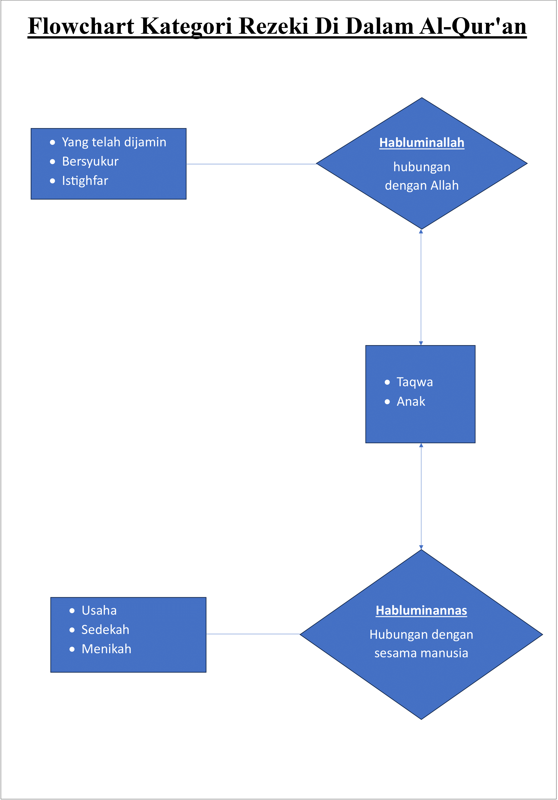
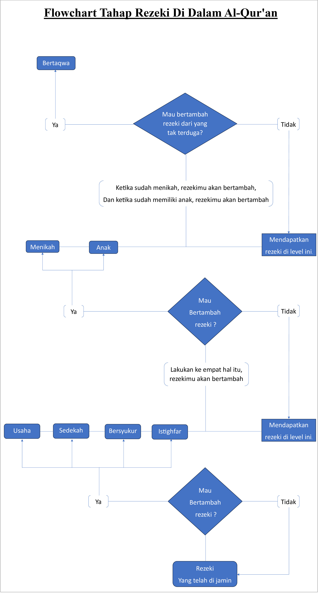

Rezeki Dalam Al-Qur'an
4 Juni 2025, atau bertepatan dengan Hari Tarwiyah, 8 Dzulhijjah 1446 Hijriah.
Pada tulisan kali ini, gue mau bahas soal rezeki dalam ayat Al-Qur’an. Ada delapan kategori rezeki di dalam Ayat Al-Qur’an.
Sumber ini gue ambil dari website nya kemenag, dan ini link nya :
( https://balitbangdiklat.kemenag.go.id/berita/jenis-jenis-rezeki-dalam-al-quran )
Ini hasil yang gue ringkas dari sumber tersebut.
1. Rezeki yang telah di jamin. -> Hablumminallah
Qur’an Surah Hud, Ayat 6
وَمَا مِن دَابَّةٍ فِي الْأَرْضِ إِلَّا عَلَى اللَّهِ رِزْقُهَا وَيَعْلَمُ مُسْتَقَرَّهَا وَمُسْتَوْدَعَهَا كُلٌّ فِي كِتَابٍ
مُّبِينٍ
"Dan tidak ada suatu makhluk bergerak di bumi melainkan
semuanya dijamin rezekinya oleh Allah, dan Dia mengetahui
tempat tinggal dan tempat penyimpanannya.
Semua itu tertulis
dalam Kitab (lauh mahfuz) yang nyata."
2. Rezeki karena usaha -> Habluminannas
Qur’an Surah An-Najm, Ayat 39
وَأَن لَّيْسَ لِلْإِنسَانِ إِلَّا مَا سَعَى
"Dan bahwa manusia hanya memperoleh apa yang telah
diusahakannya."
3. Rezeki karena sedekah -> Habluminannas
Qur’an Surah Al-Baqarah, Ayat 245
مَّن ذَا الَّذِي يُقْرِضُ اللَّهَ قَرْضًا حَسَنًا فَيُضَاعِفَهُ لَهُ أَضْعَافًا كَثِيرَةً
“Siapakah yang mau memberi pinjaman kepada Allah, pinjaman
yang baik (infak & sedekah), maka Allah akan melipatgandakan
pembayaran kepadanya dengan lipatan yang banyak."
4. Rezeki karena bersyukur -> Habluminallah
Qur’an Surah Ibrahim, Ayat 7
وَإِذْ تَأَذَّنَ رَبُّكُمْ لَئِنْ شَكَرْتُمْ لأزِيدَنَّكُمْ وَلَئِنْ كَفَرْتُمْ إِنَّ عَذَابِي لَشَدِيدٌ
"Sesungguhnya jika kalian bersyukur, pasti Kami akan
menambah (nikmat) kepada kalian; dan jika kalian mengingkari
(nikmat-Ku), maka sesungguhnya azab-Ku sangat pedih.”
5. Rezeki karena istighfar -> Habluminallah
Qur’an Surah Nuh, Ayat 10-11
فَقُلْتُ اسْتَغْفِرُوا رَبَّكُمْ إِنَّهُ كَانَ غَفَّارًا يُرْسِلِ السَّمَاءَ عَلَيْكُم مِّدْرَارًا
"Beristighfarlah kepada Tuhanmu, sesungguhnya Dia adalah
Maha Pengampun, pasti Dia akan mengirimkan hujan kepadamu
dengan lebat, dan memperbanyak harta.”
6. Rezeki karena menikah -> Habluminannas
Qur’an Surah An-Nur, ayat 32
وَأَنكِحُوا الْأَيَامَىٰ مِنكُمْ وَالصَّالِحِينَ مِنْ عِبَادِكُمْ وَإِمَائِكُمْ إِن يَكُونُوا فُقَرَاءَ يُغْنِهِمُ اللَّهُ مِن
فَضْلِهِ
"Dan nikahkanlah orang-orang yang masih membujang di antara
kamu, dan juga orang-orang yang layak dari hamba sahayamu
baik laki-laki dan perempuan. Jika mereka miskin, maka Allah
akan memberikan kecukupan kepada mereka dengan
kurnia-Nya."
7. Rezek karena anak -> Habluminannas & Habluminallah
Qur’an Surah Al-Israa, ayat 31
وَلَا تَقْتُلُوا أَوْلَادَكُمْ خَشْيَةَ إِمْلَاقٍ نَّحْنُ نَرْزُقُهُمْ وَإِيَّاكُمْ
"Dan janganlah kamu membunuh anak-anakmu karena takut
miskin. Kamilah yang akan menanggung rezeki mereka dan juga
(rezeki) bagimu.”
8. Rezeki tak terduga -> Habluminallah & Habluminannas
Qur’an Surah At-Talaq, ayat 3
وَمَن يَتَّقِ اللَّهَ يَجْعَل لَّهُ مَخْرَجًا وَيَرْزُقْهُ مِنْ حَيْثُ لَا يَحْتَسِبُ
"Barangsiapa yang bertakwa kepada Allah niscaya Dia akan
menjadikan baginya jalan keluar dan memberinya rezeki dari
arah yang tidak disangka-sangkanya."
Selanjutnya, dari yang gue ringkas itu, gue terpikirkan membuat flowchart soal konsep rezeki dalam pandangan ayat Al-Qur’an. Dan gue mau reminder, tulisan ini memang perlu ada meyakini sih, dan kalau yang tidak atau belum meyakini, gapapa juga. Mungkin bisa buat tambah-tambahan referensi sudut pandang.
Ini flowchart yang gue buat

Dan penjelasan untuk flowchart yg pertama, oh iya, ini gue menekankan, kalau ini pendapat pribadi dari pemikiran analisa gua aja si. Jadi kalau ada yang kurang setuju atau ada komentar atau apapun itu, silahkan saja, gue si aman aja. Yang penting, setidaknya bisa buat tambahan referensi aja si.
Flowchart yg pertama, gue menjelaskan untuk dari segi kategori, yang dimana ada habluminallah & habluminannas. Jadi gue si mikirnya untuk mempermudah memahami secara dasar logikanya. Atau kita bisa urut untuk memahaminya.
Dan kalau flowchart yang kedua, tahapan ini si menurut gue, bener-bener ada di kehidupan ini..
Kaya misal , kita pengen nikah. udah ada juga calon nya. tapi usaha kita males-malesan, sedekahnya kaga ada karena ngepas juga buat idup sehari-hari, terus buat bersyukur mah boro-boro, ngedumel bae nyalahin dunia, terus bilang dunia ini sangat kejam dan tidak adil, istighfarnya apalagi, kaga ada pisan di dalam hidup..
terus kita berdoa ngarep bisa nikahin itu perempuan, yaa kaga nyampe-nyampe lah kocak. gimana dah.💆💆💆
Atau usaha kita ok deh, tapi 3 lainnya itu, kurang atau tipis, ya bisa si.. sampe menikah. Karena kan ada rezeki dari usaha kita, apalagi usaha kita oke banget, skill mantap, jadi penghasilan dari kerja itu ok, terus jadi lah bisa nikahin perempuan itu.
Tapi, paling pusing nanti pas udah berumah tangga, karena ujian dan masalah pasti ada dan bertambah, karena di tahap itu. rejeki juga bertambah, tapi ya tetep pusing sama masalah atau ujian yang dihadapi, penyebabnya pusing, ya itu tadi karena masih ada 3 indikator yang kurang dilengkapi.
Menurut gue, core inti nya yaitu ada di : usaha di stabilin 100%, sedekah di stabilin 100%, bersyukur di stabilin 100%, istighfar di stablin 100%.. Konsisten aja ngelakuin ke empat hal itu.
Gue yakin, rezeki dan pengelolaan rezeki kita topcer. aseli.
Dan kalau kita mau sampe di tahap yang dapet rejeki yang tak teduga, ya pasti nya harus sampai di tahap bertaqwa, dan orang bertaqwa sudah pasti saat posisi dia dapat banyak rezeki, yang kalau kita persentase rezeki yang dia terima 100% full, lalu dia paling ambil ¼ (25%) atau mungkin di bawah itu, intinya secukupnya buat dia dan keluarganya aja, ga bakal di gunain buat bermewah-mewahan.
Karena selebinya pasti di putarkan atau di pergunakan untuk kepentingan banyak orang atau masyarakat di sekitarnya.
🙂🙂🙂🙂🙂🙂🙂🙂🙂🙂🙂🙂
Oh iya, dan soal bertaqwa menurut gue, bukan penilaian pribadi atas diri sendiri, atau orang lain. Tapi ini penilaian dari Tuhan aja. Hak prerogatif nya Dia. Jadi yang tahu hanya Dia, Kita fokus maksimalin indikator itu aja yang sudah di spill sama Dia melalui Al-Qur’an.
Sama kaya pemberian Hidayah, itu Hak prerogatif Tuhan, kita atau bahkan sekelas para Rasul pun, fokusnya terus berdakwah saja. Soal orang itu mau menjadi muallaf atau tidak itu hak prerogatif Tuhan, jadi hanya Dia yang tahu dan memberikan hidayah itu.
😇😇😇😇😇😇😇
Dan Terakhir, menurut gue, tahap rezeki tersebut adalah satu kesatuan, yang dimana seoalah-olah Tuhan bilang ke kita, saat kamu terlahir di dunia, Aku (Tuhan) sudah jamin rezekimu sampai kamu kembali lagi kepada-Ku. contoh : masih dapat bernafas dengan normal, badan sehat, masih bisa bergerak, melihat, dsb.
Lalu kita berpikir untuk mau bertambah rezeki, maka Tuhan bilang, kamu harus usaha, contoh bekerja, berdagang, dll. dari sana akan bertambah rezekimu.
Lalu mau bertambah rezekinya lagi, maka Tuhan bilang bersedekah, membantu yang di landa musibah, dsb. rezekimu akan bertambah.
Lalu kita mau bertambah rezeki, maka Tuhan bilang bersyukur lah apa yg sudah kamu terima. maka aku akan tambah rezekimu,.
Lalu kita mau bertambah rezeki lagi, maka Tuhan bilang beristighfar lah, di setiap harinya.. maka aku akan tambah rezekimu.
Lalu kita masih mau bertambah rezeki, Tuhan bilang maka menikahlah, karena dengan begitu, rezeki akan bertambah.
Lalu kita masih mau bertambah rezeki lagi, lalu Tuhan bilang maka memiliki keturunan lah, karena dengan memiliki anak. rezeki akan bertambah.
Lalu kita masih mau bertambah rezeki dari yang tak terduga, maka Tuhan bilang, bertaqwa lah, akan aku berikan rezeki kepadamu dari hal yang tidak disangka-sangka olehmu.
🎺🎺🎺
Kesimpulan dari gue, intinya kalau sampai mau di tahap bertaqwa, maka kita wajib banget tuh lakuin secara konsisten dan stabil di tahap : usaha, sedekah, bersyukur, dan istighfar.
Nah buat yang masih single, fokus ke empat itu aja, seiringnya waktu berjalan, bakal ketemu juga pasangan buat akhirnya menikah.🤵👰
Dan yang sudah menikah tapi belum di karunia keturunan anak, ya juga sama lakuin hal itu. gue yakin, bakal di kasih jalannya.🤱
Dan yang sudah menikah dan memiliki anak, ini harusnya sudah betul-betul konsisten terus yah dengan empat hal itu, karena kalau ada yang miss atau kurang dari salahsatu ke empat itu. Pasti bakal pusing dan burnout buat jalanin hidupnya.
Tetapi pada nyatanya, banyak yang kita lihat, sudah berkeluarga dan memiliki anak, lalu pasangan itu malah merasa stress, pusing, merasa terbebani sekali hidupnya.😵💫😫
Mungkin memang berat dengan kondisi di zaman saat ini. Tapi gue berpikir kayanya sama aja deh, mau di zaman rasul pun, juga sama berat bebannya,
nah tinggal power dari diri kitanya aja nih bagaimana. Nah power kita ini harusnya dipakai buat stabilin dan konsisten lakuin ke-empat indikator itu.
Gue yakin pasti sama Tuhan di support banget, karena kita udah lakuin sesuai apa yang Dia spill di dalam Al-Qur’an.
Dan Dia(Tuhan) sendiri yang bilang dengan yakin (di baca : pada surah Al-Baqarah ayat 2), bahwa di kitab Al-Qur’an tidak ada sedikit pun keraguan di dalamnya.
Dan kalau kita masih ada keraguan apa yang udah di spill sama Dia (Tuhan) di dalam Al-Qur’an. Coba aja kita lakukan, terbukti engga di hidup kita.😁